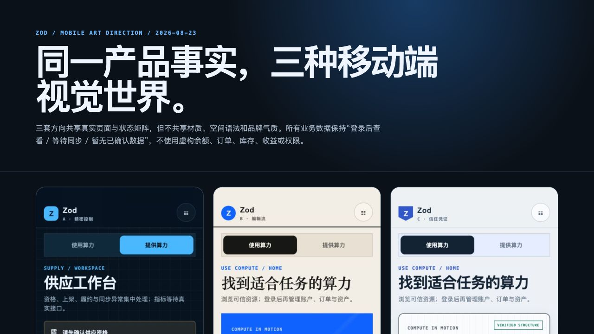
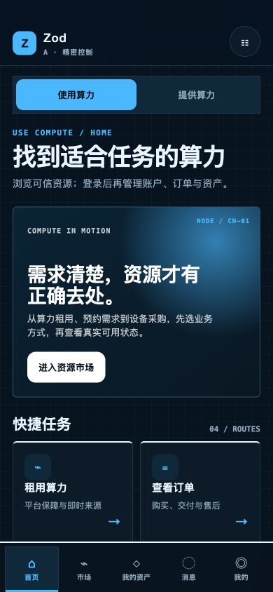
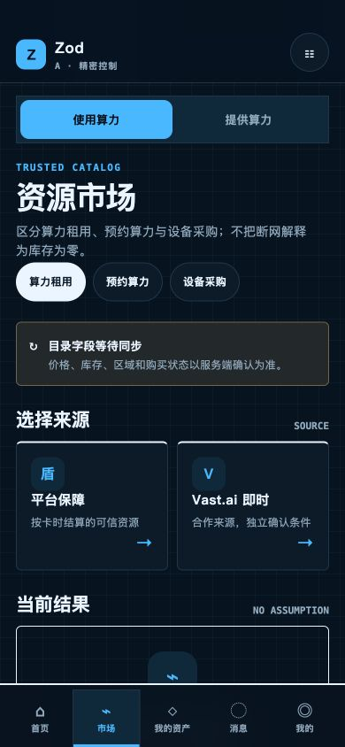
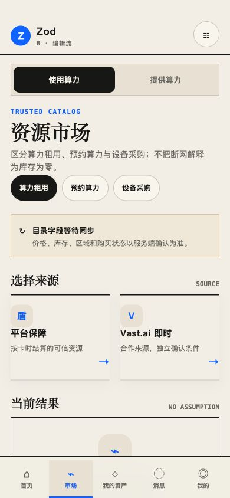
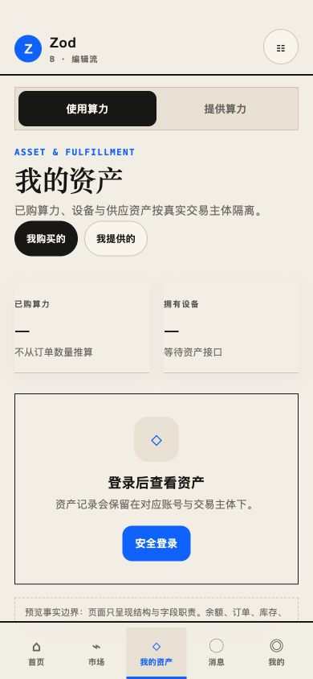
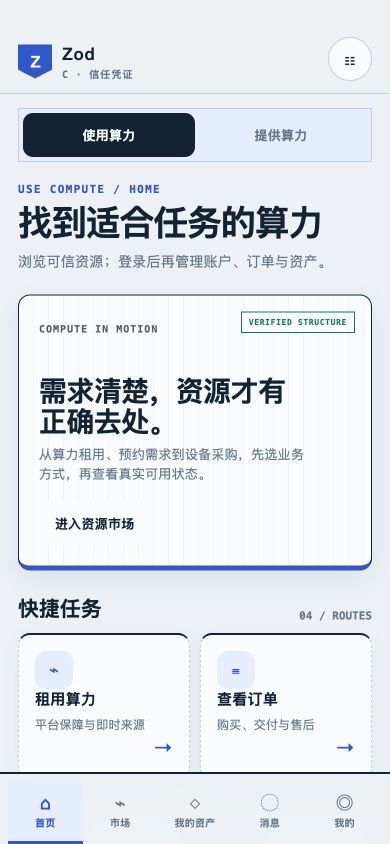
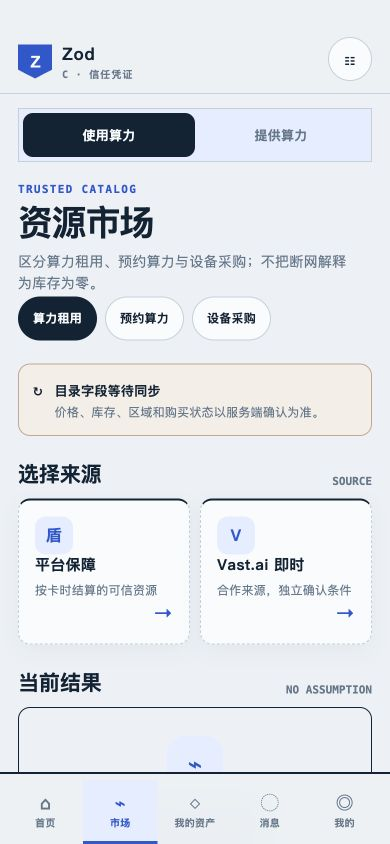
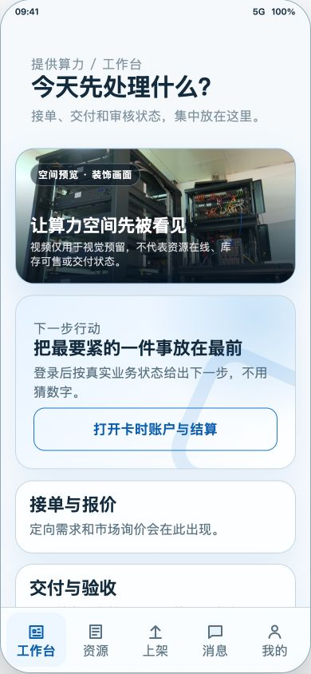
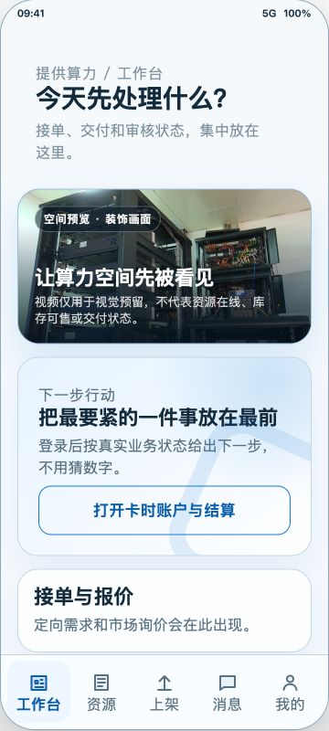
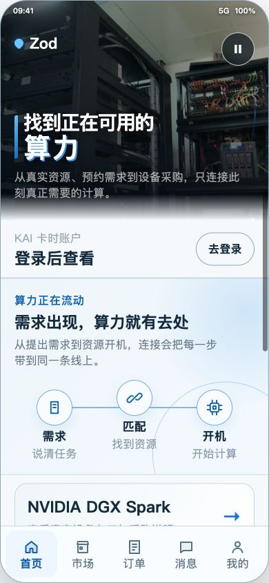

入口承担全部协调
用于查看优化前的平台订阅、目的地判定与副作用耦合。
ZOD / PHASE 2 / UNIFIED REVIEW / 2026-08-24
这是统一审阅工件，不是 React Native 生产界面。它链接既有证据，不接 API、不发布、不部署，也不授权后续真实 UI 实施。
Phase 1 与 Phase 2 的已列报告均已获妈妈批准；本入口继续作为设计证据和版本边界索引，不构成 RN 实施或生产发布。
| AC | 审阅状态 | 关键证据 | 不可推断 |
|---|---|---|---|
| AC-01 | Phase 1 已批准 | typed intent、provider_order side、生命周期、provider_offer；8/8、161/161、TypeScript、143/121。 | 静态合同不覆盖 payload/auth/runtime。 |
| AC-02 | Phase 1 已批准 | 架构 before/after 两份自包含 HTML 解析 2/2。 | 没有真实设备性能 profiler。 |
| AC-03 | Phase 2 已批准 | A/B/C 结构上 3×12 可达；两角色五栏；9 张 390×844 代表截图；既有浏览器 72/72 双尺寸证据。 | 没有 36 张全矩阵截图，也没有 360 截图集；CSS 不能替代几何实测。 |
| AC-04 | Phase 2 已批准 | design 来源提交、provider 快照、README、gap audit、媒体依赖均可追溯。 | 设计证据不是 main、不是生产、不是已实现 RN。 |
| AC-05 | Phase 2 已批准 | 本页、Markdown 报告、本地链接与边界矩阵。 | 入口只汇总证据，不启动实施阶段。 |
| AC-06 | Phase 1 已批准 | provider 顶部媒体、底部五栏、390/360、console 0/0、媒体暂停合同。 | 实际 OS reduced-motion 未模拟。 |
| AC-07 | Phase 1 已批准 | 技术负责人和移动美术总监联合报告 :2 已批准，无接口/所有权冲突。 | 批准报告不授权真实 UI、发布或部署。 |
入口职责从集中式协调收束为 lifecycle adapter、typed intent 与 App 唯一副作用执行器；页面视觉、错误/空态和后端边界保持原位。
用于查看优化前的平台订阅、目的地判定与副作用耦合。
展示 useAppLifecycle、AppNavigationIntent 和唯一执行器。
包含 provider_order side、provider_offer、生命周期、RN/Web 和 API 静态合同边界。
聚焦测试验证订单侧、卸载保护和 offer 失败顺序。
三套 HTML 共用同一 12 场景运行时，但视觉语法不同。妈妈已选择 B 编辑流骨架 + A 提供方状态组件 + C 交易凭证组件；这是选型规则，不表示新的混合 HTML 或 RN 已实现。
每个链接都直接定位方向、角色与场景。该矩阵证明结构可达，不代表存在 36 张截图。
buyer：home / 首页、market / 市场、assets / 我的资产、messages / 消息、profile / 我的
provider：workspace / 工作台、resources / 资源、publish / 上架、messages / 消息、profile / 我的
| 场景 | 角色 | A 精密控制 | B 编辑流 | C 信任凭证 |
|---|---|---|---|---|
| home · 买方首页 | buyer | A / home | B / home | C / home |
| market · 资源市场 | buyer | A / market | B / market | C / market |
| assets · 我的资产 | buyer | A / assets | B / assets | C / assets |
| messages · 消息 | buyer | A / messages | B / messages | C / messages |
| profile · 我的 | buyer | A / profile | B / profile | C / profile |
| orders · 买方订单 | buyer | A / orders | B / orders | C / orders |
| wallet · KAI 卡时 | buyer | A / wallet | B / wallet | C / wallet |
| workspace · 供应工作台 | provider | A / workspace | B / workspace | C / workspace |
| resources · 提供方资源 | provider | A / resources | B / resources | C / resources |
| publish · 上架中心 | provider | A / publish | B / publish | C / publish |
| login · 安全登录 | buyer | A / login | B / login | C / login |
| offline · 离线恢复 | buyer | A / offline | B / offline | C / offline |
A/B/C 只有 9 张 390×844 代表截图；Phase 1 provider 修订另有 390×844、360×800 和 buyer 对照三张证据图。没有 A/B/C 的 360 截图集。

方向总览 · 1280×720
A · home
A · market A · workspace B · home
B · market
B · assets
C · home
C · market C · assets


这是 design 分支工作树上的本地未提交预览快照，不是 main、生产或已实现 RN。
| 架构父提交 | 321fe7e8c6415fb673b418ca410b917f41c5f373，其远端 main 基线为 4a6236ec9bc3ae04f54713617a388f0b0aed7a6f。 |
|---|---|
| design 来源提交 | origin/design/mobile-preview-20260823 / 0708bc377c75cd5ff4eac1ac6fea2a3419415fed；内容已线性重放到本候选分支。 |
| provider 修订来源 | kai-mobile-v2-preview.html 来自经批准的 design 工作树本地快照；本分支将其作为设计证据提交，不称其为 main、生产或 RN。 |
| 来源文件 SHA-256 | 49943850d13996c8b099a92f7160f543eb21b265940e96cbcf9614f9a223359c |
| 旧 gap audit 基线 | b2adcc088543a25725ed46bb8287454478150c85 是 2026-08-20 审计时的 origin/main，不是当前 remote ref。 |
provider workspace 媒体、两角色导航、route/History/focus 的 HTML 投影。
README 明确预览不替换 RN；gap audit 记录目标态和旧审计基线。
视频信息不承载在线、库存、可售或交付事实。
/mobile/v1 范围闭合在仓库根目录启动任意静态文件服务器，并从本仓库的 docs/unified-review/index.html 打开。所有交付链接均为仓库相对路径。
也可直接以本地文件打开本页；Markdown 在浏览器中可能显示为纯文本，这是预期行为。
{kind=link}
{kind=link}
{kind=link}
{kind=link}
{kind=link}
{kind=link}
{kind=link}
{kind=link}
{kind=link}
{kind=link}
{kind=link}
{kind=link}
{kind=link}
{kind=link}